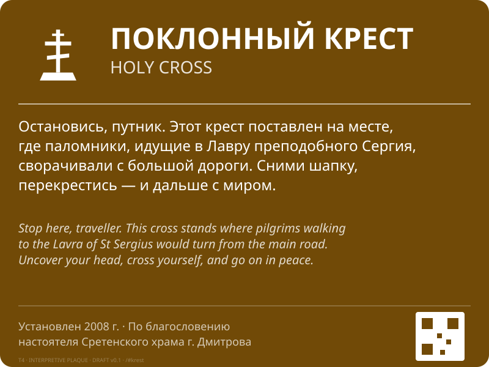

Макеты знаков · Тропа преподобного Сергия Радонежского
Первая итерация SVG-эскизов навигационной системы для деревни Святогорово. Соответствие ГОСТ Р 57581-2017 и Методическому пособию Минкультуры РФ (2013).
Пиктограммы
Многоразовые блоки, используемые в композициях знаков. Каждая пиктограмма — отдельный
SVG в папке pictograms/, viewBox 1000×1000. Соответствуют графическим
образцам Методички (раздел 3.5).


Композитные знаки
Полные макеты знаков типа T1-T4 — собранные из пиктограмм с текстовыми блоками, QR-кодами и служебными элементами. Каждый знак самодостаточен (пиктограммы инлайн), без внешних зависимостей.

Точка входа в маршрут. Устанавливается у въезда в деревню или у ближайшей парковки. Содержит схематическую карту, реестр объектов с пиктограммами и расстояниями, контакты и QR на лендинг. В правом верхнем углу — пиктограмма ТИЦ (стенд выполняет роль туристско-информационного центра).

Маркер начала / финиша Святогоровского отрезка. Двусторонняя, на одной опоре, читается с обеих сторон тропы. Главная пиктограмма #38 — крупно. Маркер «фазы 1» в нижнем углу — задел на расширение к Дмитрову и Лавре.

На развилке. Три типичные панели на одной мачте: верхняя — к Поклонному кресту, средняя — к Часовне, нижняя (другое направление) — к Гостевому дому. Каждая панель самостоятельна и снимается / меняется независимо.

Стоит в 3-5 м от объекта, под наклоном 15-30° (как пюпитр). Текст в нарративе из
00-concept/narrative.md — короткий, ёмкий, билингва. Атрибуция и QR
внизу. Для остальных объектов меняется только пиктограмма и текстовый блок —
конструкция табличек идентичная.
Что в следующей итерации
- Уточнить геометрию пиктограмм по точным образцам Методички (нужен дизайнер с Illustrator).
- Сделать макеты остальных объектов: T4 для Часовенки и Купели (отличаются пиктограммой и текстом).
- Добавить макет T5 (знак зоны отдыха) и T6 (указатель к гостевому дому).
- Подготовить шрифт: либо лицензировать Myriad PRO, либо принять решение об опен-сорс замене (PT Sans Narrow).
- Подписать настоящие тексты табличек в
06-content/sign-texts.md. - После полевой работы — наложить макеты на фото мест установки (компьютерные монтажи для пакета согласования).